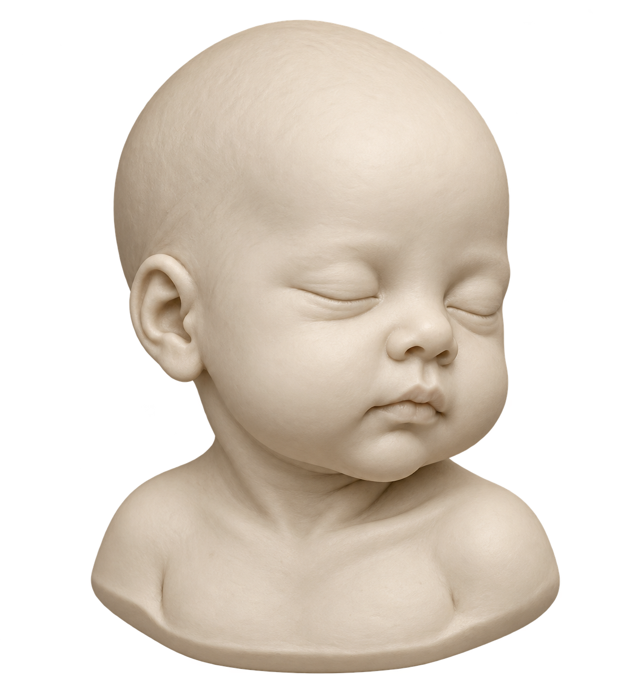
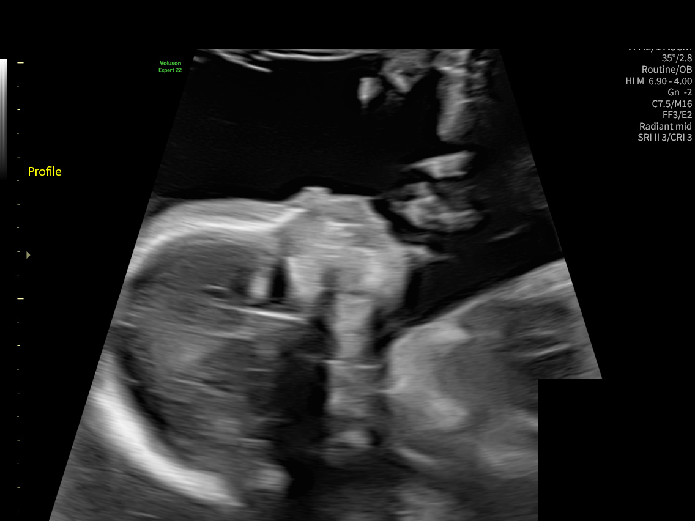
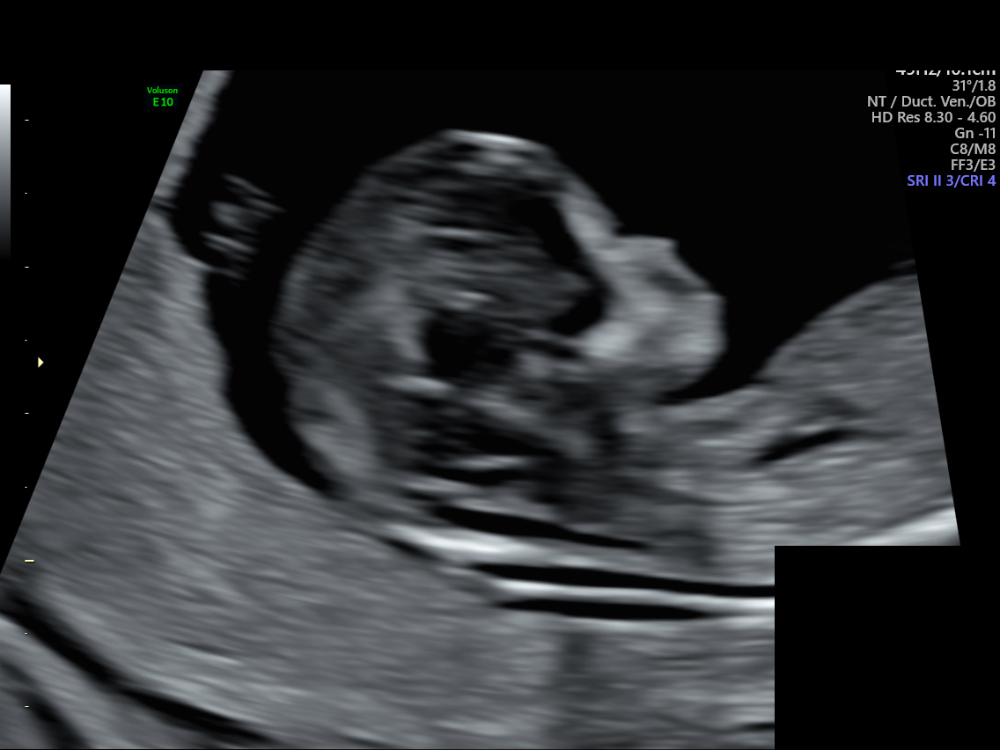

Artistic keepsakes
Inspired by the ultrasound.
Not a measured reconstruction.
Two imagined sculptures to turn, explore, and keep.

Prenatal keepsake
An artistic interpretation of a profile, with imagined depth and unseen features.

Drag to turn. Scroll or pinch to zoom. With the sculpture focused, use arrow keys to turn, + / − to zoom, and Home to reset.
Where the idea began
The visible profile is the starting point. The sculpture’s depth, other side, and fine facial details are imagined.
The age-one portrait is a separate creative interpretation. Ultrasound cannot tell us what a child will look like at one.


About these portraits and their limits
The source collection contains flat ultrasound images and video clips from separate studies. It does not include a 3D volume or calibrated positions for the slices. Only the anatomy-study profile loosely informed the prenatal artwork; the earlier scan is shown for context. These views were not combined into a measured anatomical reconstruction. The age-one artwork was created independently without a scan reference.
The portraits are artistic meshes. They are not a verified likeness, a growth simulation, or a health assessment. The neutral clay appearance is an artistic choice; skin, eye, and hair color cannot be inferred from these scans.
Image generation created the artwork. The open-source TripoSR model then converted each illustration into a mesh locally. Read the method and limitations or mesh-generation report.
Each downloadable GLB is a three-dimensional object you can open in a compatible 3D viewer. The still portrait is a separate artwork and may differ from the mesh. Viewing uses Three.js, open-source software under the MIT license. The viewer loads its code and assets from this site.
Download both models and portraits together (ZIP, about 11 MB).
The original public scans retain their existing privacy treatment. Dates are not restored here.